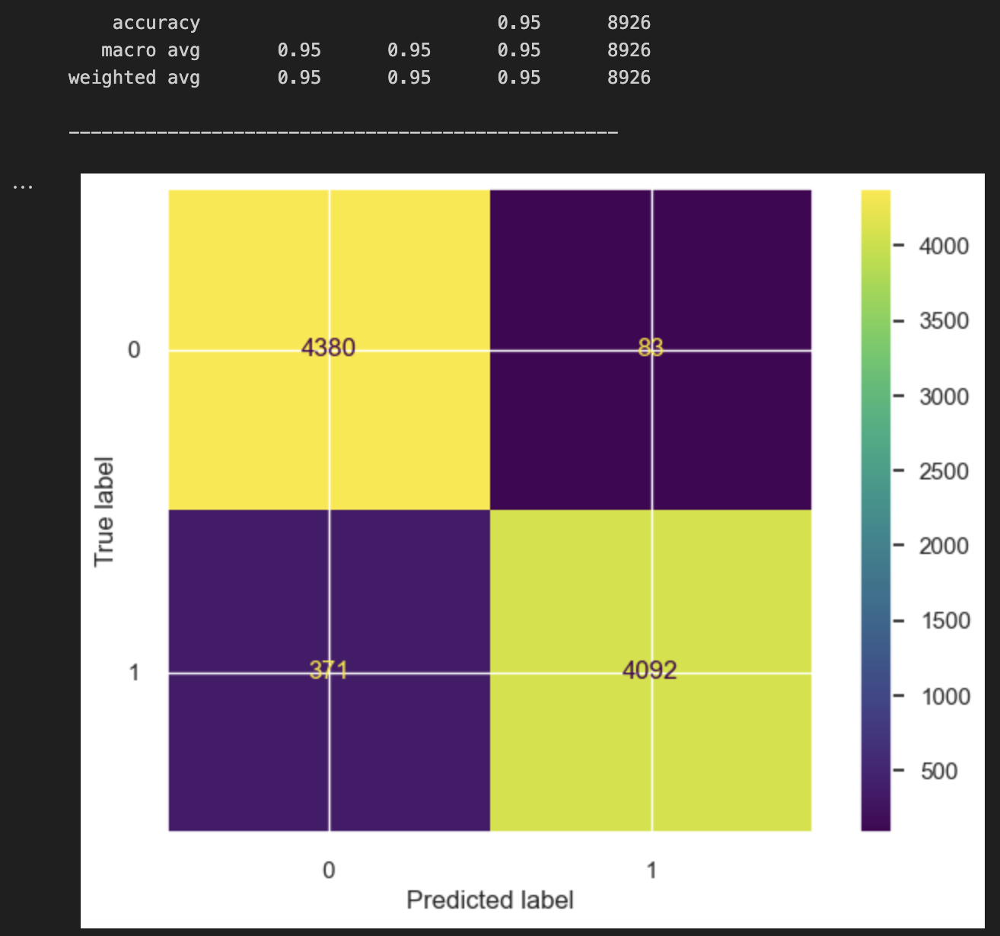
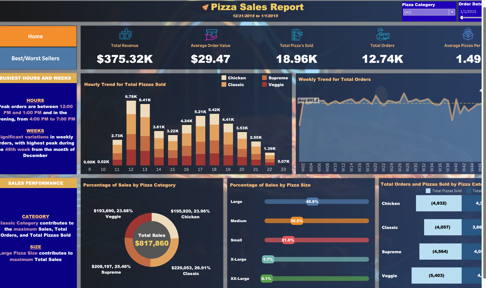
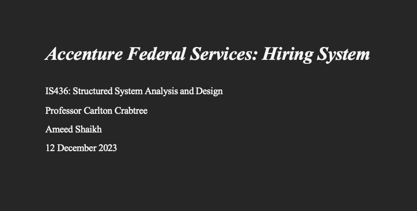

Welcome to my tech project portfolio! I am Ameed Shaikh, a senior in my final semester at the University of Maryland, Baltimore County, majoring in Information Systems. As a passionate and dedicated individual, I have immersed myself in various projects throughout my academic journey, showcasing my expertise in data analytics, data visualization, and systems analysis. This portfolio is a testament to the culmination of my efforts,
highlighting the projects I've undertaken both as part of my coursework and during my personal time. As you navigate through this portfolio, you'll gain insights into the diverse range of projects that I have conceptualized and brought to fruition. From data-driven analyses to intricate systems analysis, each project represents a milestone in
my continuous quest for knowledge and proficiency in the realms of Data Science and Programming.

In this impactful project, I delved into the realm of credit risk assessment, leveraging advanced statistical analysis and machine learning techniques to enhance predictive capabilities. As a part of this endeavor, I meticulously explored a comprehensive credit risk dataset, employing Python as the primary tool for analysis.
This Parking Management System is a sophisticated solution meticulously crafted to streamline the management of parking spaces, sessions, and customer interactions. This PL/SQL project serves as a robust platform for both parking administrators and customers, offering a range of features to enhance efficiency and user experience.

In this innovative project, I seamlessly blended SQL and Tableau to develop an interactive and insightful sales dashboard tailored for a pizza company. This comprehensive solution caters to the specific needs of the company by providing a dynamic and user-friendly interface to analyze sales data.

Embarking on a transformative project, I aimed to revolutionize Accenture Federal Services' talent acquisition system. This project encapsulates my proficiency in systems analysis, design, and problem-solving. It reflects my commitment to delivering solutions that address real-world challenges and contribute to the success of organizations. Explore the Systems Request, specific requirements, functional and nonfunctional requirements, use cases, entity-relationship diagram (ERD), prototype, and more, to witness the depth of my skills and dedication to driving impactful change.